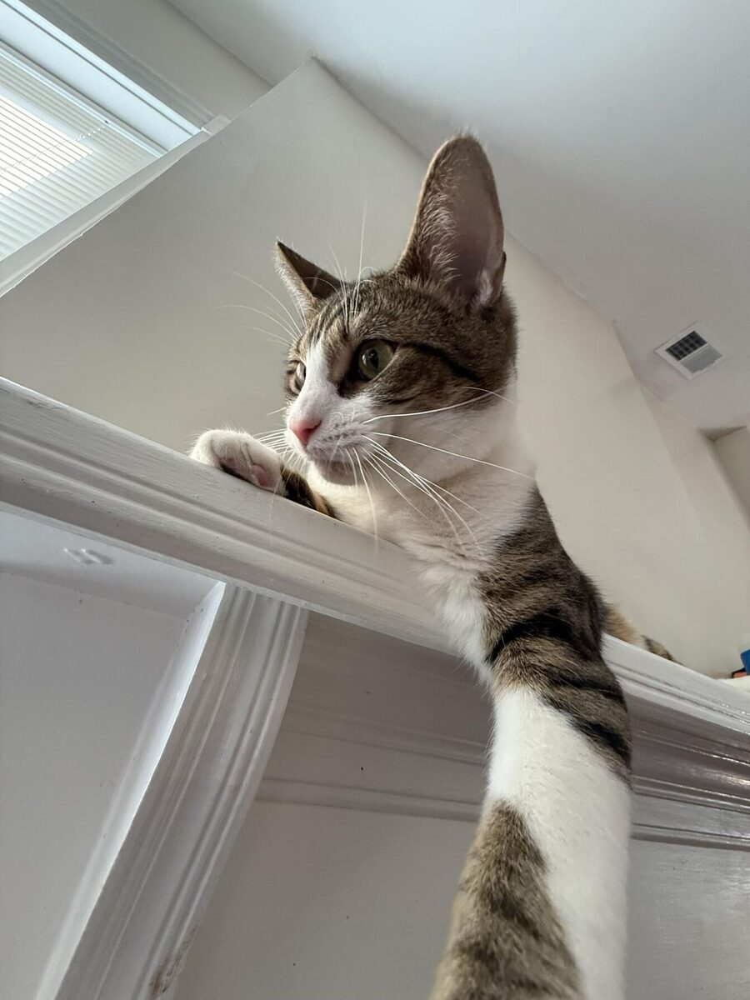
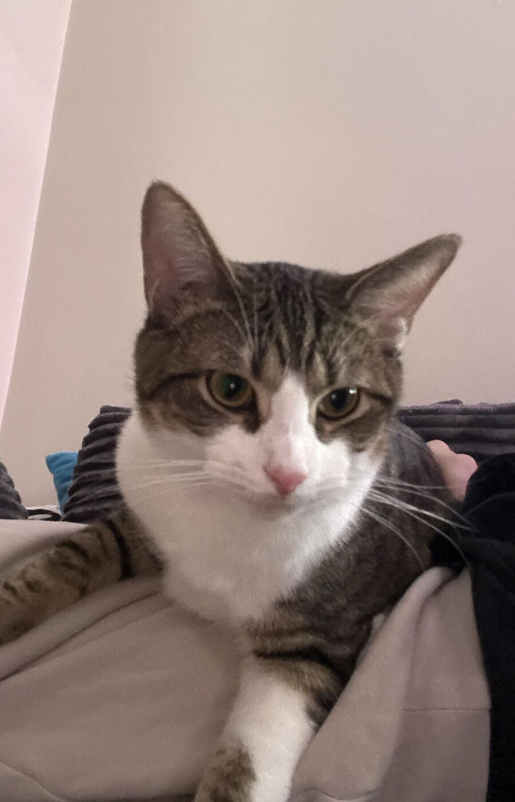
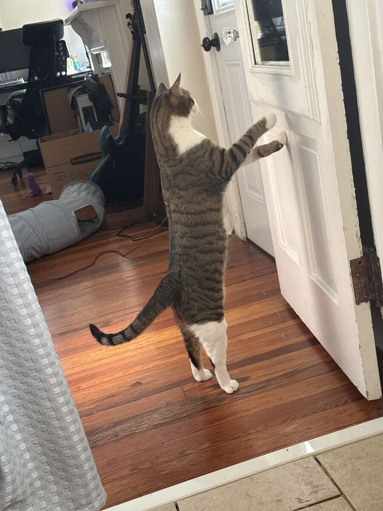

About fizzle
Fizzle is a small collection of interactive science demos, built by hand as a final project for Comm 360 at the University of Louisville.



What this is for
Most science explanations online are articles with a diagram bolted on. You read a paragraph about periodic trends, look at a static image of the table, and hope the idea sticks. It usually does not, because reading about a pattern and seeing a pattern move are different experiences. Fizzle exists to close that gap in the smallest way possible: pick up one idea, give it a control the reader can move, and let the result answer the question faster than a paragraph could.
The intended reader is anyone curious with a browser open. There is no assumed background beyond high school science, no jargon that is not defined on the page where it appears, and no account required for anything. Each experiment is meant to be understood in a couple of minutes and abandoned without guilt. If a demo makes one idea click, it did its job.
How it was built
Every page here is hand-written HTML. There is one external stylesheet, fizzle.css, linked from all eleven pages, and it carries essentially all of the styling through custom properties for the two color themes. The interactive parts are plain JavaScript, one small script per demo, named in the header bar of each demo stage so the source is easy to find. There is no framework, no bundler, and no build step. The fonts and icons are stored in this folder rather than loaded from a content delivery network, so the site works offline and depends on nothing outside itself.
The color themes are Catppuccin Latte and Mocha, with a lavender accent and one color per subject: teal for chemistry, green for biology, violet for physics. The theme toggle in the header follows your system preference on the first visit and remembers your choice after that. The guestbook writes to your browser's local storage, which is the whole backend. No cookies, no trackers, no server-side code.
A note on AI assistance
An AI assistant (Claude) helped write parts of this site, including sections of the HTML structure, the CSS, the JavaScript for the demos, and drafts of this prose. Every file on the site carries a comment at the top saying so, which is the disclosure the course requires. The design direction, the choice of experiments, the science being explained, and the final editing are mine. Where a simulation simplifies something, the page it lives on says so directly rather than leaving the reader to assume the model is complete.
Credits
Icons are Twemoji, copyright Twitter/X and contributors, licensed under CC-BY 4.0 and stored locally in this project. Typefaces are Sora and Karla for text and Hack for monospace, all openly licensed and self-hosted. Element data comes from PubChem, and the rocket figures come from public NASA documentation. The full source list is on the reference page.